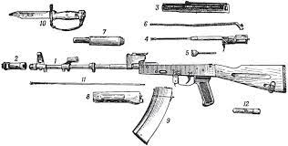

Silahlar haqqında ümumi anlayış
Bioloji Silah
Bioloji silah kütləvi qırğın silahlarının bir növü olub bakteriya, virus və ya kif kimi
mikroorqanizmlərdən əldə olunan vasitələrə və onları tətbiq etmək üçün istifadə edilən döyüş
Bioloji təhlükəni xarakterizə edən beynəlxalq simvol. sursatına, cihaz və tərtibatlara deyilir.[1] Bioloji silahın əsasını xəstəlik
törədən mikroorqanizmlər və onlardan alınan toksinlər,
viruslar, prionlar təşkil edir.
Bioloji silahlar insanların, heyvanların və bitkilərin məhv edilməsi, eyni zamanda ərzaq ehtiyatlarının və içməli suyun zəhərlənməsi
üçün istifadə edilir.
Bioloji vasitələrə, xarici mühitin təsirinə çox davamlı
olan, əhali arasında kütləvi xəstəlik törədən, profilaktikası və müalicəsi çətin olan mikroorqanizmlər aid edilir.
Onların insanlara, heyvanlara və bitkilərə zədələyici təsiri bir sıra fərdi xüsusiyyətlərlə xarakterizə edilir. Xəstəlik törədən
mikroblar ən kiçik dozalarla
belə yoluxucu xəstəlik törədə bilir
və onların toksinləri müəyyən müddət xarici mühitdə və ya yoluxmuş həşərat, gənə və gəmiricilərdə qala bilir. Bioloji vasitələrin
zədələyici xassələrindən biri
də onlarda inkubasiya və ya gizli təsir dövrünün olmasıdır.
Bioloji silahlarda, əsasən taunun, vəbanın, Sibir yarasının, tulyaremiyanın, bruselyozun, melioidozanın sarı və başqa isitmə
növlərinin, təbii çiçəyin,
psitmakozanın (ornitlozanın), səpmə və qarın yatalağının,
qripin, malyariyanın dizentiriyanın və b. törədiciləri olan müvafiq mikroorqanizmlərdən, viruslardan, bakteriyalardan,
göbələklərdən və s. istifadə olunur. Bioloji silahlar da, eynilə kimyəvi silahlar kimi hədəfə müxtəlif raket, artilleriya, fuqas,
mərmi, mina, qumbara,
xüsusi səpmə qurğuları vasitəsilə və ya su mənbələrini, qida anbarlarını, rəqib
milli valyutasını və s. yoluxdurmaqla, istehlak bazarına bu maddələrlə yoluxdurulmuş ərzaq ixrac etməklə,
ayrı-ayrı təşkilatlarına bu maddələrlə yoluxdurulmuş məktub göndərməklə və s. yolları ilə çatdırılır ki,
sonrakı mərhələdə artıq o, kimyəvi silahdan fərqli olaraq eskalasiya, zəncirvari reaksiya doğuraraq epidemiya şəklində yayılır.
Bioloji silahlardan istifadə 1925-ci il Cenevrə Protokoluna [2] və 1972-ci ildə imzalanmış Bakterioloji
(Bioloji) və Zəhərli Silahların İşlənməsinin, İstehsalının Qadağan edilməsi haqqında Konvensiyaya əsasən qadağandır.
Silah
Silah — insanların və ölkələrin bir başqa insana və ya ölkələyə qarşı müdafiə və müqavimət üçün istifadə etdiyi alətdir. Silahlardan həm
də özünü müxtəlif yırtıcılardan və təhlükəli obyektlərdən qorumaq üçün istifadə edilir.
Silah tarixi
Silah tarixi
İlk dəfə odlu silah XIV əsrdə Çində ixtira olundu. Daha sonra bu odlu silahlar Yaxın Şərqə, Avropaya və Afrikaya yayıldı.
Hətta silahda istifadə olunan barıtı da çinlilər ixtira edib. Bu isə IX əsrdə ixtira olunub.
Silah Novlari
Silah Novlari
Silahlar iki yerə bölünürlər: soyuq və odlu.
Soyuq silahlar
Soyuq silahlara bıçaq, şüşə parçası, kəsici alətlər, sağlamlığa zərər verə biləcək bütün bərk əşyalar və s. aiddirlər.
Soyuq silahlar da iki yerə bölünürlər: cinayət məsuliyyəti daşıyan və daşımayan.
Hava limanında təhlükəsizlik işçiləri tərəfindən toplanan silahların seçilməsi
Odlu silahlar
Mərmisi barıtın yanması ilə əmələ gələn təzyiq nəticəsində istiqamətlənmiş hərəkət edən və hədəfi məhv etmək qabiliyyətinə malik olan silaha odlu silah deyilir.
Odlu silahlara tapança, avtomat, pulemyot, raket, top və s. daxildir.
Odlu silahlar özlüyündə iki qrupa bolunur: yivli və yivsiz. İlkin yaranmış odlu silahlar yivsiz idi. Yivlər silahın lüləsinin daxilində spiralvari halqalardir.
Ballistikada bu halqalar arsındakı məsafə (diametr) kalibr (5.45; 7.62) adlanır. Yivlər atəş zamanı mərminin
fırlanmasına səbəb olur. Fırlanan mərmi isə daha
cox məsafə qət edir, daha dəqiq olur və daha surətli hərəkət edir, hədəfi sərrast vurmağı təmin edir. Yivlər sayına görə 4-dən 8-ə qədər, sağ və sol istiqamətli olurlar.
Yivsiz odlu silaha misal olaraq ov tüfənglərini göstərmək olar. Bütün döyüş silahları yivlidir.
Bundan başqa silahların qaz silahı, pnevmatik silah kimi növləri də var. Bunlar odlu silah hesab olunmur.
